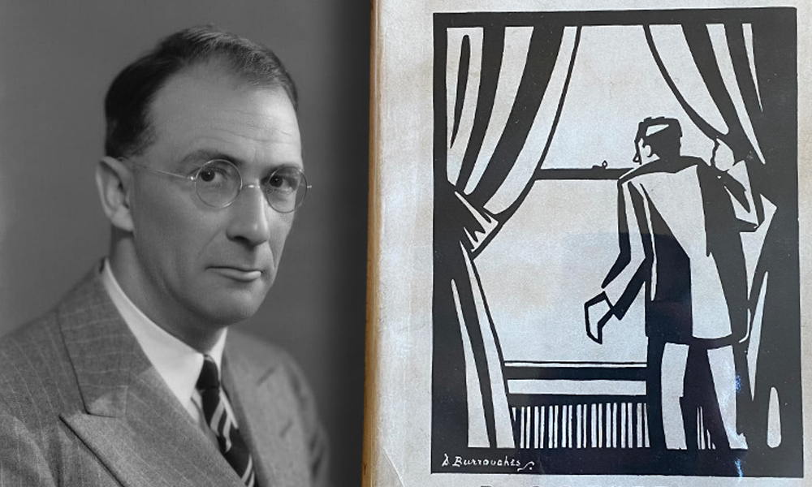

Kicking off our third all-crime issue, we're delighted to welcome back Donald McCarthy, whose previous contribution to Mythaxis – more than two years ago! – melded crime with science fiction. This time he focuses on the psychological and atmospheric aspects of the genre. Trauma no doubt colours one's perceptions of life as life continues; the unease that comes with a not fully recognised threat maybe do the same, even before the traumatic comes to pass.
In this editor's opinion, there's no harder target to hit in fiction than the funny bone, but perhaps it's the hint of the smart, the sly, and the sour that steadied Mark H. Harris's hand as he lined up on this satirical short. It's not what you'd call subtle, but sometimes subtlety's the last thing you should aim for. You ask me, he killed it.

Devin James Leonard has an ear for grotty, smaller-than-small-town backwoods Americana. Here he rekindles an acquaintance with his character Daryl Fox, a youth with no role models you'd want to recommend and who (to judge by a previous story, 'Catch and Release', elsewhere) is only going to become more of a handful with age.

This story is all crime for sure, and yet that's not all it is by a long shot. If that sounds contradictory, good, get used to it. In skirting the edge of horror Shamus Maxwell delivers exactly what it says on the tin, conjuring up a heady mixture of killers, divinities, madness, and Brits. Supposedly gods are All Seeing and All Powerful, but - judging by this at least - not necessarily All There.

Another genre blend, as Angus McIntyre turns the tried and true police procedural loose on a highly plausible near-future case that combines such technological marvels as cryptocurrency and anonymized digital marketplaces with probably the second oldest profession in the history of humanity: murder-for-hire. SF knows, the more things change, the more they stay the same…

Our pleasure now to present a true first-timer! Ayame's debut short story publication is a faintly fantastical take on one of the most recognisable scenes of the entire crime genre: the interview room, and - perhaps - the confession. But when someone claims as fact what cannot possibly be true, can we truly say they're guilty, even if they believe every word they say?

Muttering under his breath in a feverish manner, mind tormented by what is or might have been, lit by a sickly glow as he sits hunched by his reflection… fortunately Bill Ryan haunts only his computer screen, kindly taking time out from his ongoing study of the fine and fraught in literature to ruminate on this old, sinister case.
Time to stand 2025 up against the wall and put it out of our misery. But in lieu of a final meal, cigarette, or drink, only a few last words… in the form of recommended short crime reads that lie scattered around the internet like the ones that didn't get away.